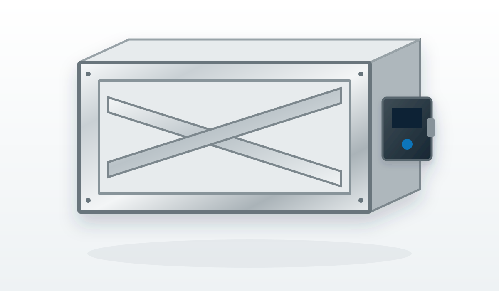
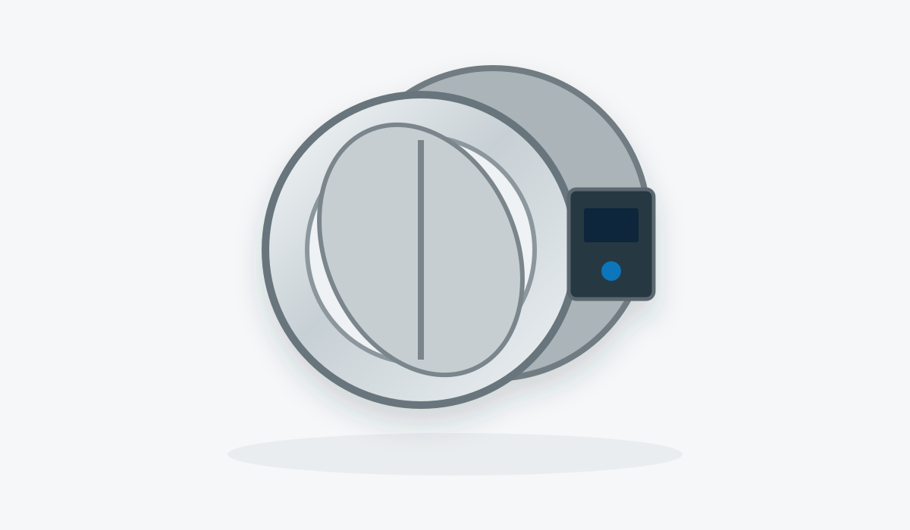
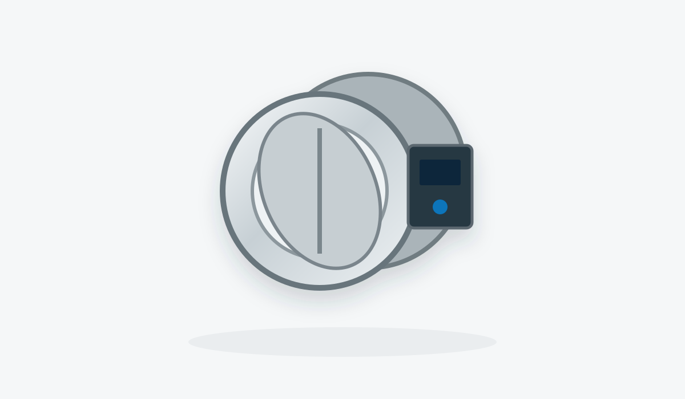
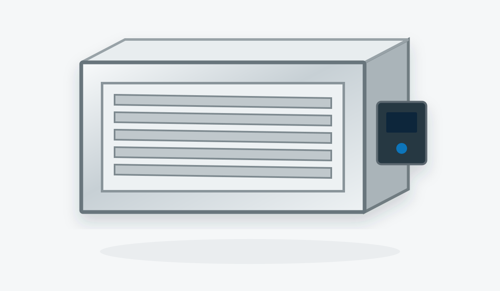

FKA2-EU
Универсальный прямоугольный противопожарный клапан для широкого диапазона монтажных ситуаций.
- Прямоугольное исполнение
- Различные способы установки
- Электропривод / терморасцепитель
- Интеграция в BMS — в зависимости от комплектации
FIRE & SMOKE PROTECTION · TROX
Клапаны для огнезадерживающей вентиляции, отсечения пожарных отсеков, систем дымоудаления, подпора и компенсационного воздуха.
ПРОТИВОПОЖАРНЫЕ КЛАПАНЫ
Прямоугольные и круглые исполнения для разных размеров, способов монтажа и условий эксплуатации.

Универсальный прямоугольный противопожарный клапан для широкого диапазона монтажных ситуаций.

Прямоугольный противопожарный клапан TROX для разнообразных монтажных применений.

Круглый противопожарный клапан для больших диаметров с низким перепадом давления.

Компактный круглый противопожарный клапан для стеснённых монтажных пространств.

Прямоугольный противопожарный клапан для вытяжных и выбросных воздуховодов коммерческих кухонь.
ДЫМОУДАЛЕНИЕ
Для механического дымоудаления, систем подпора, удаления тепла и дыма и подачи компенсационного воздуха.

Многостворчатый дымовой клапан с большой площадью свободного сечения для высоких расходов.

Прямоугольный дымовой клапан для механического дымоудаления, подпора и подачи дополнительного воздуха.
Листовой прямоугольный дымовой клапан для механических систем дымоудаления отдельных пожарных секций.
Тип клапана определяется не только размером воздуховода. Нужны назначение системы, пределы огнестойкости, тип строительной конструкции, способ монтажа, направление воздуха, требования автоматики и диспетчеризации, а также проектные нормы для конкретного объекта.
BOOM Engineering проверяет применимость оборудования TROX по проекту и помогает увязать клапаны с приводами, автоматикой, дымоудалением и общей системой вентиляции.
ПРОЕКТНАЯ ПОДДЕРЖКА
Пришлите спецификацию, размеры, тип стен/перекрытий, предел огнестойкости и схему автоматики — проверим модели и комплектацию.